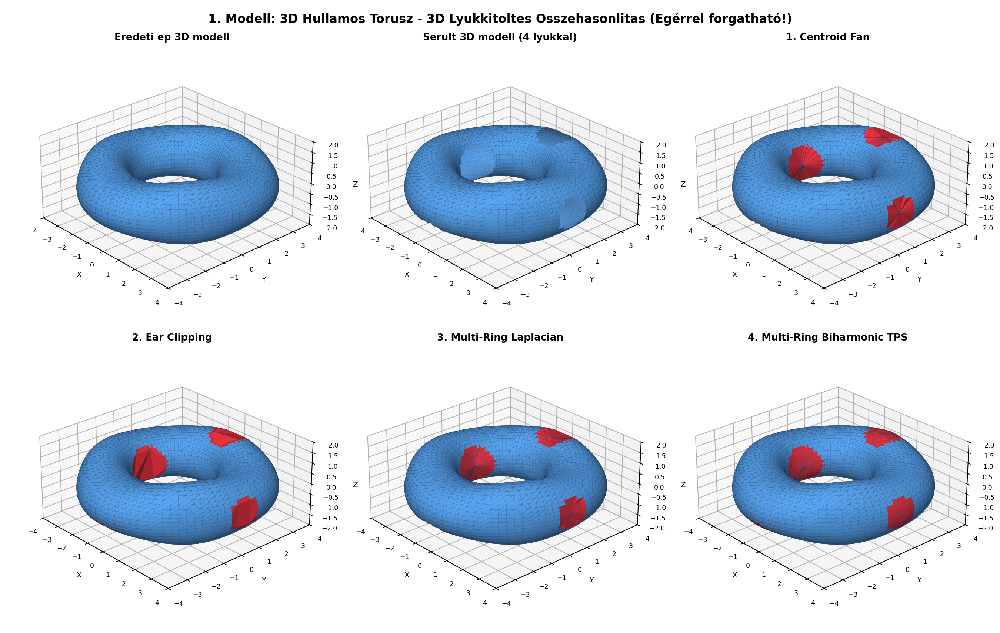
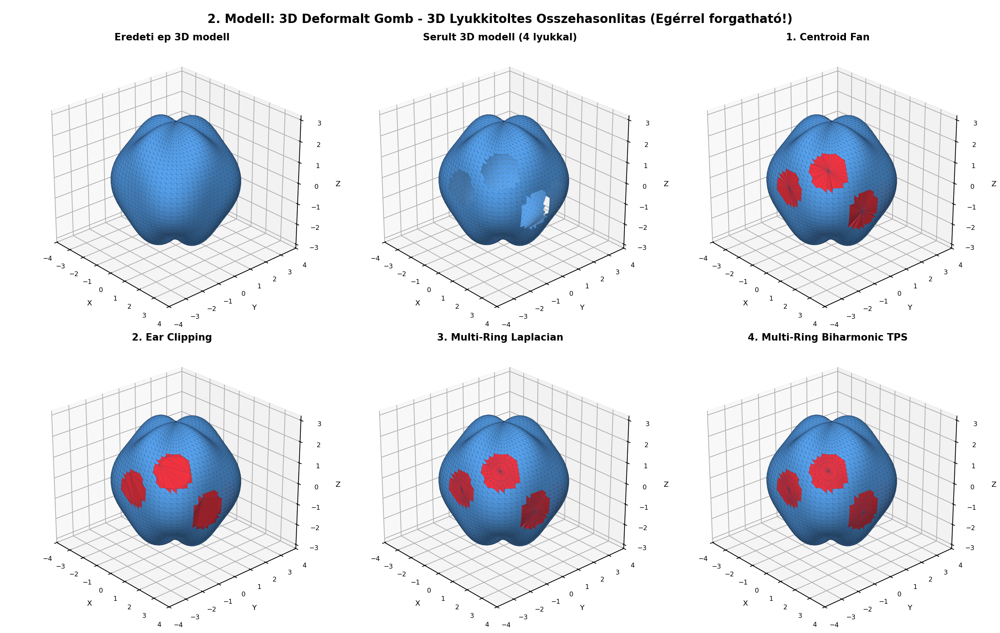

Csoportos Projektlabor | Automatikus kiértékelés 2 különböző 3D tesztgeometrián
Generálás dátuma: 2026-11-19 16:50:34
| Algoritmus | Pótolt háromszögek | Maradék lyukak | Nyitott élek | RMSE hiba | Hausdorff hiba | Futási idő |
|---|---|---|---|---|---|---|
| 1. Centroid Fan | 126 db | 0 db | 0 db | 0.09638 | 0.15949 | 14.7 ms |
| 2. Ear Clipping | 118 db | 0 db | 0 db | 0.07080 | 0.19400 | 52.7 ms |
| 3. Multi-Ring Laplacian | 630 db | 0 db | 0 db | 0.09804 | 0.22726 | 125.6 ms |
| 4. Multi-Ring Biharmonic TPS Legpontosabb | 630 db | 0 db | 0 db | 0.06400 | 0.12389 | 85.7 ms |

| Algoritmus | Pótolt háromszögek | Maradék lyukak | Nyitott élek | RMSE hiba | Hausdorff hiba | Futási idő |
|---|---|---|---|---|---|---|
| 1. Centroid Fan | 127 db | 0 db | 0 db | 0.08040 | 0.13736 | 16.5 ms |
| 2. Ear Clipping | 119 db | 0 db | 0 db | 0.06595 | 0.11728 | 60.7 ms |
| 3. Multi-Ring Laplacian | 635 db | 0 db | 0 db | 0.07766 | 0.15606 | 70.8 ms |
| 4. Multi-Ring Biharmonic TPS Legpontosabb | 635 db | 0 db | 0 db | 0.06034 | 0.10619 | 188.9 ms |
